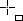

Inserir controls de formulari
Afegir un camp de control
L'opció de menú Visualitza | Barra d'eines | Controls de formulari mostra la barra d'eines amb les eines necessàries per inserir camps de control de formulari en un full de El LibreOffice Calc. Per agregar un camp de control, procediu de la següent manera:
- En la barra d'eines Controls de formulari, feu clic en la icona del camp de control que voleu afegir
- Arrossegueu, mentre manteniu premut el botó d'acció, el punter del ratolí (que ara tindrà la forma ) per sobre del full fins que tingui la grandària desitjada
- Per crear un camp de control de forma quadrada, mantingueu premuda la tecla de Majúscules mentre arrossegueu el ratolí
- Deixeu anar el botó d'acció del ratolí (i, si fos el cas, la tecla de Majúscules)
Modificar un control
Un cop inserit el camp de control de formulari, es poden editar les seves propietats. L'eina Control o l'opció Control del menú de context que s'obtindria en fer clic amb el botó dret sobre el control, permeten definir o modificar les seves propietats
- Seleccioneu el camp de control fent clic amb el ratolí
- Premeu l'eina Control o, del menú de context, escolliu l'opció Control
- Modifiqueu les propietats del control en les pestanyes
- General: Permet definir les propietats generals del camp de control. Aquestes propietats dependran del tipus de camp de control i poden ser diferents entre un tipus de camp de control i un altre.
- Dades: En aquesta pestanya es pot assignar una font de dades al camp de control seleccionat i, segons el tipus, establir la cel·la enllaçada (cel·la que rep el resultat d'accionar el camp de control).
- Esdeveniments: En aquesta pestanya, es poden vincular macros amb les accions que tenen lloc en el camp de control.
- Activeu el Mode de disseny prement l'eina Mode de disseny activat/desactivat i comproveu el correcte funcionament del camp de control.
Alguns exemples
Botó que canvia a un full determinat o obre una adreça web
- Inseriu el botó en el full de càlcul i dimensioneu-lo
- Accediu a les propietats del control
- En General | Acció, canvieu a No la propietat Agafa el focus quan et facin clic
- En General | Acció, desplegueu la llista i escolliu Obre un document/pàgina web
- En General | URL, escriviu el nom del full precedit del símbol # (#Full3, per exemple) o l'adreça de la pàgina web a la qual voleu accedir. En el cas de les adreces web, a General | Marc, podeu establir el marc de destinació (_blank, _parent, _self, _top)
- #Full3.A24, mostraria seleccionada la cel·la A24 del Full3
- #Full2.A1:C12, mostraria seleccionat el rang A1:C12 del Full2
- http://www.edu365.cat, obriria en el navegador la pàgina de l'edu365.cat.
Botó que activa una macro d'usuari
- Creeu la macro (consulteu Crear una macro)
- Inseriu el botó en el full de càlcul i dimensioneu-lo
- Accediu a les propietats del control
- En Esdeveniments | S'ha deixat anar el botó del ratolí premeu sobre […]
- En la finestra Assigna una acció, premeu el botó Macro…
- En la finestra Selector de macros, localitzeu i assenyaleu la vostra macro
- Premeu el botó D'acord fins a tancar les dues finestres que teniu obertes
Activeu el Mode de disseny prement l'eina Mode de disseny activat/desactivat i comproveu el correcte funcionament del camp de control.
Botó incremental que canvia els valors d'una cel·la
- Inseriu el botó incremental en el full i dimensioneu-lo
- Accediu a les propietats del control
- En la pestanya General
- Establiu el valor mínim canviant-lo a Valor mín.
- Establiu el valor màxim canviant-lo a Valor màx. (ha de ser major que el valor mínim)
- Establiu el valor per defecte canviant-lo a Valor per defecte (ha de pertànyer al rang de valors establerts)
- Establiu el valor d'increment o decrement canviant-lo a Valor d'increment/decrement
- En la pestanya Dades
- Escriviu la referència de la cel·la on voleu que apareguin els valors que assoleixi el camp de control (A12, per exemple)
Activeu el Mode de disseny prement l'eina Mode de disseny activat/desactivat i comproveu el correcte funcionament del camp de control.
Quadre de llista o quadre combinat que canvia el valor d'una cel·la
- En qualsevol indret del full (o fins i tot en un altre full), escriviu en columna la llista d'elements que voleu que formin part de les opcions del quadre de llista o quadre combinat. Tot i que es poden afegir en les propietats del control escrivint-les, d'aquesta forma és molt més senzill i, en canviar el contingut de les cel·les, canviareu automàticament les opcions que ofereix el quadre de llista o el quadre combinat.
- Inseriu el quadre de llista o combinat en el full i dimensioneu-lo
- Cancel·leu l'auxiliar del quadre de llista o quadre combinat
- Accediu a les propietats del control
- En la pestanya General
- Canvieu el valor de Recompte de línies pel número d'opcions que heu escrit (si voleu que es mostrin totes)
- Escriviu a Selecció per defecte / Text per defecte algun text explicatiu que indiqui que s'han d'escollir opcions
- En la pestanya Dades
- A Cel·la enllaçada, escriviu la referència de la cel·la on voleu que aparegui el valor seleccionat de la llista (B2, per exemple)
- A Abast de la cel·la d'origen, escriviu la referència del rang de cel·les on heu escrit els diferents valors (A4:A12, per exemple, si les dades estan al mateix full que el control o Full2.A4:A12, per exemple, si les dades es troben en un full diferent del del control)
Activeu el Mode de disseny prement l'eina Mode de disseny activat/desactivat i comproveu el correcte funcionament del camp de control.